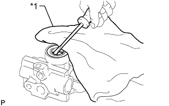

ЛОПАСТНОЙ НАСОС (для моделей с 5L-E) > РАЗБОРКА |
| 1. СНИМИТЕ ШТУЦЕР КАНАЛА ВСАСЫВАНИЯ |
Выверните болт и снимите штуцер впускного отверстия усилителя рулевого управления.
С помощью отвертки снимите кольцевое уплотнение со штуцера впускного отверстия усилителя рулевого управления.
| 2. СНИМИТЕ КЛАПАН УПРАВЛЕНИЯ РАСХОДОМ |
Снимите штуцер выпускного отверстия.
Снимите кольцевое уплотнение со штуцера выпускного отверстия.
Снимите клапан управления расходом и пружину сжатия.
| 3. СНИМИТЕ ЗАДНИЙ КОЖУХ ЛОПАСТНОГО НАСОСА |
Выверните 4 болта и снимите задний кожух лопастного насоса.
Снимите прокладку.
Снимите 2 кольцевых уплотнения с заднего кожуха лопастного насоса.
| 4. СНИМИТЕ ЗАДНЮЮ БОКОВУЮ ЗАЩИТНУЮ ШАЙБУ ЛОПАСТНОГО НАСОСА |
Снимите волнистую шайбу с задней боковой защитной шайбы лопастного насоса.
 |
Снимите заднюю боковую защитную шайбу лопастного насоса.
| 5. СНИМИТЕ СТОПОРНОЕ КОЛЬЦО ЛОПАСТНОГО НАСОСА |
Снимите стопорное кольцо лопастного насоса.
| 6. СНИМИТЕ РОТОР ЛОПАСТНОГО НАСОСА |
Снимите 10 пластин лопастей лопастного насоса.
При помощи 2 отверток снимите стопорное кольцо с вала лопастного насоса.
Снимите ротор лопастного насоса.
| 7. СНИМИТЕ ВАЛ ЛОПАСТНОГО НАСОСА |
Извлеките вал лопастного насоса из переднего кожуха лопастного насоса.
| 8. СНИМИТЕ САЛЬНИК КОЖУХА ЛОПАСТНОГО НАСОСА |
|  |
С помощью отвертки подденьте сальник кожуха лопастного насоса.
| *1 | Ткань |